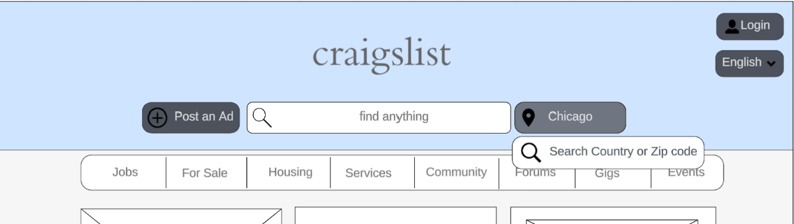
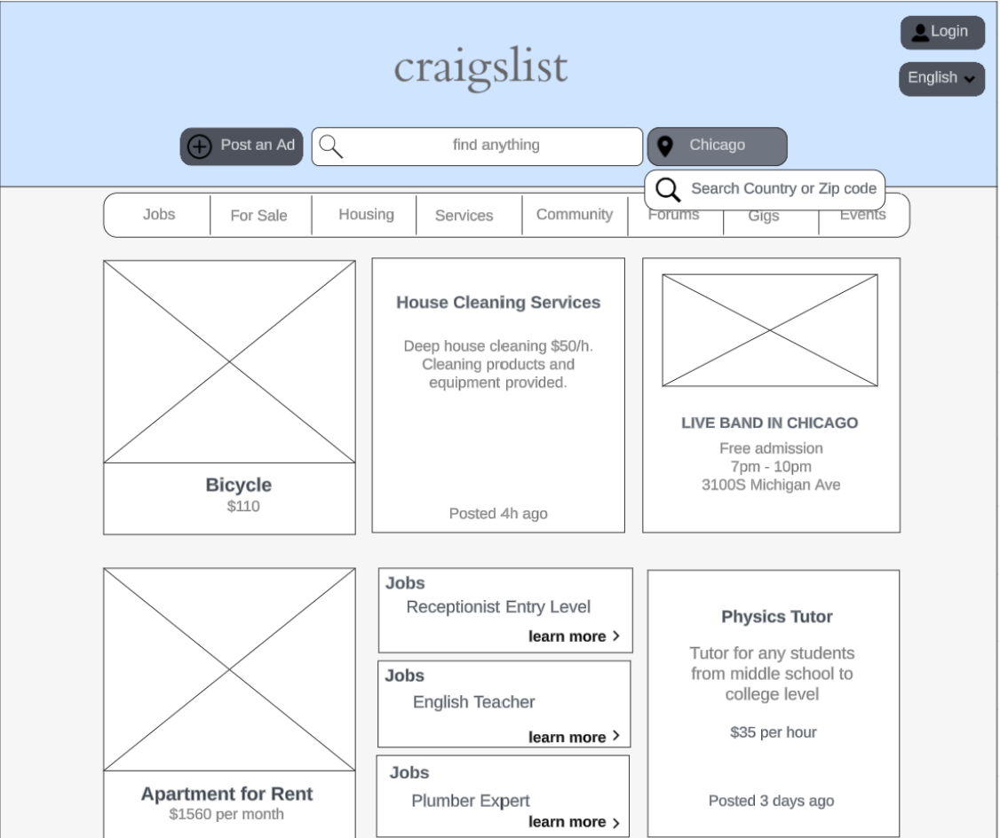

To effectively address the usability challenges highlighted in our usability audit of Craigslist's website, a comprehensive overhaul is warranted. Here's a detailed discussion of the necessary changes and how they will significantly enhance usability on the site:
1. Improved Navigation Structure:
Implement a streamlined navigation structure that categorizes listings more intuitively. For instance, separate sections for merchandise, services, jobs, housing, and events could vastly enhance user comprehension.
Introduce a persistent navigation bar or sidebar that remains visible throughout the browsing experience, allowing users to effortlessly navigate between sections and return to the home page from any point on the site.
Consider implementing customizable navigation options, allowing users to personalize their browsing experience based on their preferences and frequently accessed categories.
2. Enhanced Search Functionality:
Revamp the search functionality to provide more refined results based on user queries. Incorporating filters such as location, price range, date, and category would empower users to narrow down their searches effectively.
Explore the possibility of incorporating geolocation technology to provide location-based search results, enabling users to find relevant listings based on their proximity.

Figure 2: Potential design for top navigation bar
3. Clearer Labeling and Organization:
Introduce a hierarchical organization system that prioritizes essential information while minimizing clutter. Utilize clear headings, subheadings, and visual cues to guide users through the site's content hierarchy effortlessly.
Conduct user testing sessions to gather feedback on labeling clarity and organization effectiveness, iterating on design elements based on real user insights.
Figure 3: Potential design for job listings page
4. Visual Aesthetics and Readability:
Overhaul the visual design of the website to enhance aesthetics and readability. Opt for a modern and visually appealing design language while ensuring optimal contrast and legibility for text and graphics.
Incorporate whitespace strategically to reduce visual clutter and create a more inviting browsing environment. Well-spaced content enhances readability and facilitates easier navigation through the site.
Conduct a comprehensive visual audit to identify areas for improvement in typography, color scheme, and layout design. Prioritize a design overhaul that aligns with contemporary trends while maintaining brand identity.
5. User-Friendly Interaction Design:
Implement intuitive interaction design principles to streamline user interactions and minimize cognitive load. Ensure that clickable elements are visually distinct and responsive, providing clear feedback upon interaction.
Implement progressive disclosure techniques to present information gradually, reducing cognitive overload and allowing users to focus on relevant content.
Explore the use of microinteractions to delight users and enhance engagement, such as animated transitions, subtle hover effects, and interactive feedback mechanisms.

Figure 4: Potential design for shopping page from buyer perspective
6. Accessibility Features:
Prioritize accessibility features to ensure inclusivity and accommodate users with diverse needs. Incorporate alt text for images, keyboard navigation support, and compatibility with screen readers to enhance accessibility for users with disabilities.
Prioritize inclusive design practices such as scalable fonts, high color contrast, and keyboard-friendly navigation to accommodate users with diverse needs and preferences.
Implementing these changes will yield several benefits for usability on the site:
Layout and Navigation: This website has a much simpler and more streamlined design. It removes many of the sidebars and sections visible in the first original website, focusing more on the main content areas like Jobs, For Sale, Housing, etc. This declutters the page and enhances user navigation, making it easier to find what you're looking for without being overwhelmed by options. We included more obvious navigation icons such as the “Home” icon to help with this issue and simplified the location search to make the overall experience less ambiguous.
Color Scheme and Visual Appeal: Craigslist uses multiple shades of blue, which can make the page look a bit busy. Our website opts for a more minimalist color scheme, using mostly grayscale except for the blue headers, which helps important elements stand out more effectively.
Functional Layout: Our website prioritizes important actions like "Post an Ad" more effectively by placing them prominently at the top of the page. This improves accessibility and user engagement by making key functionalities easier to access.
Improved Readability: By reducing the amount of text and using more space around elements, our website likely improves readability. This makes the user experience more comfortable, especially in longer browsing sessions.
In conclusion, the proposed changes outlined above represent a holistic approach to enhancing usability on Craigslist's website. By prioritizing user needs, improving navigation and search functionality, optimizing visual design, and incorporating user feedback mechanisms, Craigslist can create a more intuitive and engaging browsing experience for its users, ultimately driving increased satisfaction, retention, and brand loyalty.